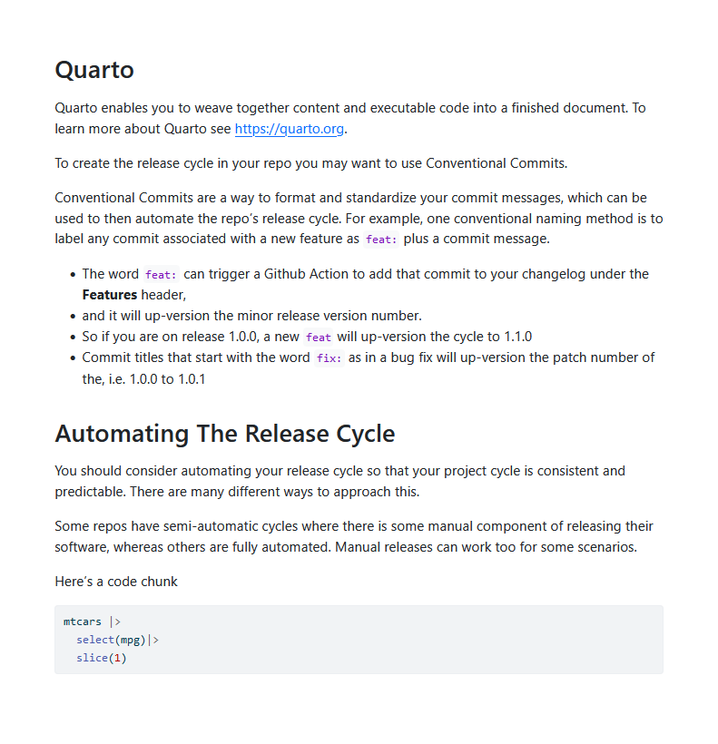
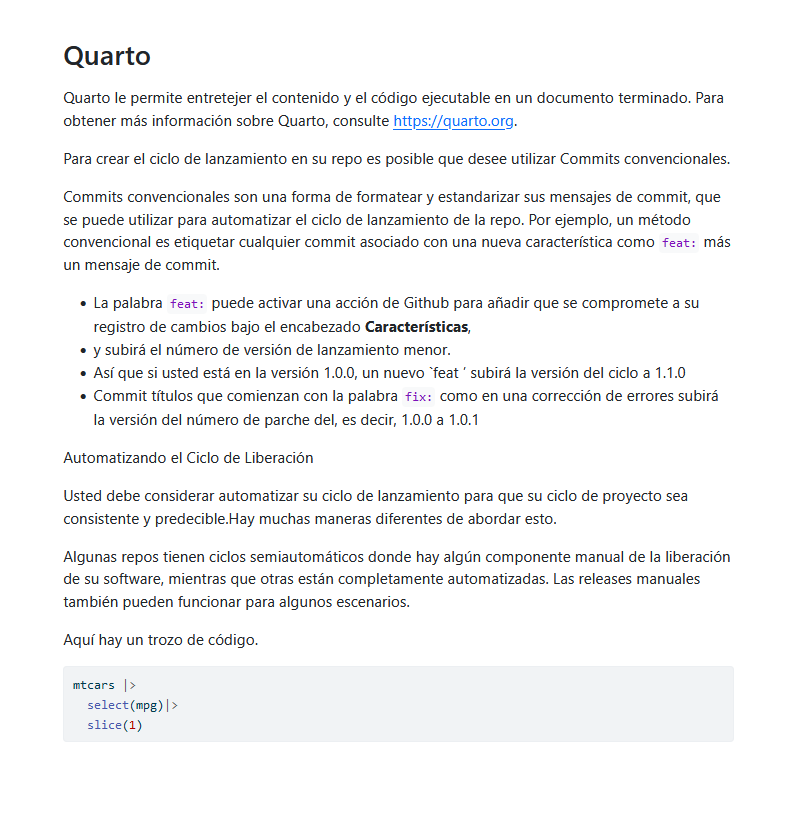

Multilingual Quarto
I made a simple workflow for translating the text of a qmd file (or really any md file) into a new language. I’ll use English to Spanish as an example.
🤗 Hugging Face Transformers
The first step is to find a model that can translate into whatever language we want. I looked into a few different apis (like Google, DeepL), but they all required a credit card on file (even free versions), an api token, and they all have a tier approach where you can only make so many api calls.
I wanted to simplfy everything and avoid putting my credit card into any browser. Queue Hugging Face Transformers
Transformers provides APIs and tools to easily download and train state-of-the-art pretrained models. Using pretrained models can reduce your compute costs, carbon footprint, and save you the time and resources required to train a model from scratch. These models support common tasks in different modalities, such as:
📝 Natural Language Processing: text classification, named entity recognition, question answering, language modeling, summarization, translation, multiple choice, and text generation. 🖼️ Computer Vision: image classification, object detection, and segmentation. 🗣️ Audio: automatic speech recognition and audio classification. 🐙 Multimodal: table question answering, optical character recognition, information extraction from scanned documents, video classification, and visual question answering.
Code to use Transformers
There is an R library for hugging face, but I think it requires conda to install some python libraries and I had conda issues, so I just made a more simple package that uses pip to install the python dependencies. And this package is really only for translation and for this demo.
I originally did all of this in Python, but decided to convert everything I could into R because parsing an md file is surprisingly (or unsurprisingly?) way more straightforward in R, and that’s where the real magic happens.
- first install reticulate,
- then the package
- and then you need to install the python dependencies
reticulate:
# you need reticulate to use the python code
renv::install('reticulate')package:
# install my package
remotes::install_github('edenian-prince/translatemd')python dependencies:
This will install a separated virtual environment called r-transformers but you can rename it and specify the location of the venv if you want. It will then pip install torch, transformers and sentencepiece
translatemd::install_transformers()Getting started, this video helped a ton!
Here you need to find a NLP translation model from Hugging Face. I recommend the Helsinki models
When you find a model you want, copy the entire model name and paste it as a string into the function below, like this for the spanish model:
translator <- translatemd::select_lang("Helsinki-NLP/opus-mt-en-es")Note that the models are written like from xx to yy so in this case it’s en-es which is english to spanish
You can input text in the translate function and it will translate english to spanish:
translatemd::translate('Hello, my name is Frank')[1] "Hola, mi nombre es Frank."Translate an Entire QMD File
- Parse the QMD
- Apply the translate function to the text
- Re-write the translated QMD into a new document
md parse
The lightparser package is fantastic (and light!). It will take the qmd or rmd and return a tibble of its elements.
(parsed <- lightparser::split_to_tbl('_english.qmd'))It seems you are currently knitting a Rmd/Qmd file. The parsing of the file will be done in a new R session.# A tibble: 8 × 8
type label params text code heading heading_level section
<chr> <chr> <list> <nam> <lis> <chr> <dbl> <chr>
1 yaml <NA> <named list> <lgl> <lgl> <NA> NA <NA>
2 inline <NA> <lgl [1]> <chr> <lgl> <NA> NA <NA>
3 heading <NA> <lgl [1]> <chr> <lgl> Quarto 1 Quarto
4 inline <NA> <lgl [1]> <chr> <lgl> <NA> NA Quarto
5 heading <NA> <lgl [1]> <chr> <lgl> Automa… 1 Automa…
6 inline <NA> <lgl [1]> <chr> <lgl> <NA> NA Automa…
7 block unnamed-chunk-1 <named list> <lgl> <chr> <NA> NA Automa…
8 inline <NA> <lgl [1]> <chr> <lgl> <NA> NA Automa…md translate
unnest the text and apply the translate function
parsed_es <- parsed |>
tidyr::unnest(cols = text) |>
dplyr::mutate(text_es =
purrr::map(text,translatemd::translate)
)let’s see what it looks like.
parsed_es |>
tidyr::unnest(cols = text_es) |>
dplyr::select(type,text) |>
head()
parsed_es |>
tidyr::unnest(cols = text_es) |>
dplyr::select(type,text_es) |>
head()# A tibble: 6 × 2
type text
<chr> <chr>
1 heading # Quarto
2 inline Quarto enables you to weave together content and executable code into…
3 inline To create the release cycle in your repo you may want to use Conventi…
4 inline Conventional Commits are a way to format and standardize your commit …
5 inline - The word `feat:` can trigger a Github Action to add that commit t…
6 inline - and it will up-version the minor release version number. # A tibble: 6 × 2
type text_es
<chr> <chr>
1 heading # Quarto
2 inline Quarto le permite entretejer el contenido y el código ejecutable en u…
3 inline Para crear el ciclo de lanzamiento en su repo es posible que desee ut…
4 inline Commits convencionales son una forma de formatear y estandarizar sus …
5 inline - La palabra `feat:` puede activar una acción de Github para añadir q…
6 inline - y subirá el número de versión de lanzamiento menor. write to new qmd
clean up and write to new
parsed_es_to_qmd <- parsed_es |>
dplyr::select(-text) |>
dplyr::rename(text = text_es)
# output to qmd
lightparser::combine_tbl_to_file(
parsed_es_to_qmd,
"_spanish.qmd"
)Results
And now you have a document in English and another in Spanish


Bugs
I’ve caught a few bugs to this approach and you maybe even noticed some!
- A
#got removed in the translate - look at the section calledAutomating the Release Cycle. Since the#got removed it is no longer a header ☹️ - The
lightparserpackage has a reported bug with quarto chunk yaml parameters. Here it converted#| eval: falseinto#| eval: no, but we know that the#| eval: falseshould not be treated as text. Hopefully this is fixed
I recommend going through the document and looking for bugs like these! Some manual edits to the translated qmd file may be necessary.
Full Script Example
translate.R
# install
translatemd::install_transformers()
# select language
translator <- translatemd::select_lang("Helsinki-NLP/opus-mt-en-es")
# parse your qmd
(parsed <- lightparser::split_to_tbl('english.qmd'))
# translate the qmd
parsed_es <- parsed |>
tidyr::unnest(cols = text) |>
dplyr::mutate(text_es = purrr::map(text,translatemd::translate))
# write to a new qmd
parsed_es_to_qmd <- parsed_es |>
dplyr::select(-text) |>
dplyr::rename(text = text_es)
# output to qmd
lightparser::combine_tbl_to_file(
parsed_es_to_qmd,
"_spanish.qmd"
)